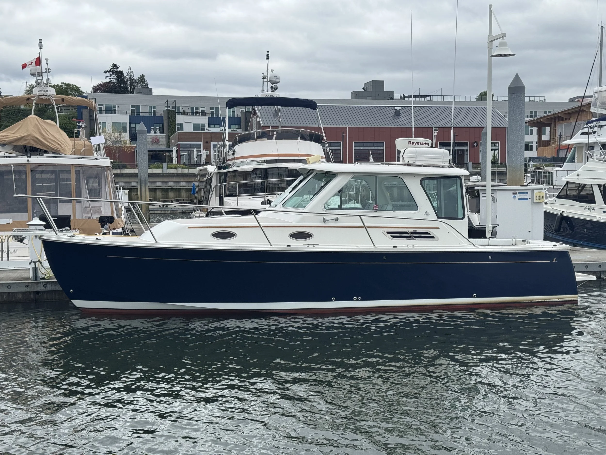

B-Atlas Boat Guide · BKCV-29
Back Cove 29 Downeast Cruiser
2003–2009
The Back Cove 29 is a Maine-built Downeast cruiser emphasizing clean sightlines, practical cockpit-to-helm flow and efficient propulsion. The model combines lobster-boat-influenced styling with contemporary recreational construction and accommodations.

- Length
- 29.5 ft
- Beam
- 9.42 ft
- Draft
- 2.5 ft
- Hull behaviour
- Semi-Displacement
- Fuel
- Diesel
- Propulsion
- Shaft
- Engine configuration
- Single diesel inboard
- Boat family
- Downeast
- Construction
- Fiberglass
Best for
- Couples wanting traditional Downeast styling with modern systems
- Coastal and inland cruising at moderate-to-fast cruising speeds
- Owners who value protected helm visibility and straightforward deck circulation
Trade-offs
- Performance-oriented Downeast cruisers use more fuel than displacement trawlers
- Accommodation volume is concentrated forward rather than in multiple private cabins on smaller models
- Mechanical access and system complexity increase materially with size
Known concerns
- No model-specific concern has been promoted to B-Atlas’s evidence threshold. This does not mean the model has no age-, condition- or hull-specific risks.
Inspection focus
- Inspect hull/deck coring around hardware and penetrations
- Verify engine, cooling, exhaust and drive-system service history
- Inspect hydraulic/electric helm-deck mechanisms where fitted
- Confirm air draft, mast and antenna configuration
- Verify tank capacities and propulsion package for the exact model year
Continue researching
Related boat models
Back Cove 26 Downeast Cruiser
26.5 ft · Semi-Displacement
Back Cove 33 Downeast Cruiser
34.67 ft · Semi-Displacement
Back Cove 30 Downeast Cruiser
34.17 ft · Semi-Displacement
Hunt Yachts Surfhunter 29 Deep-V Express Cruiser
29.33 ft · Planing
Albin 28 Tournament Express Engine Box
29.92 ft · Planing
Albin 28 Tournament Express Flush Deck
29.92 ft · Planing
About this record
B-Atlas preserves uncertainty: missing information remains unknown rather than being treated as a negative. Specifications and guidance describe the model record; individual boats can differ by year, equipment, refit and condition.